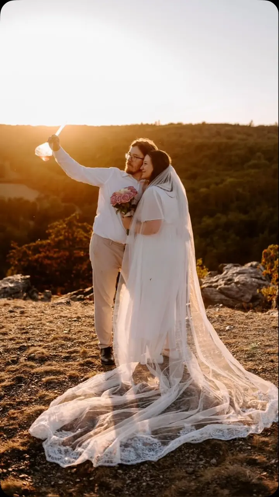
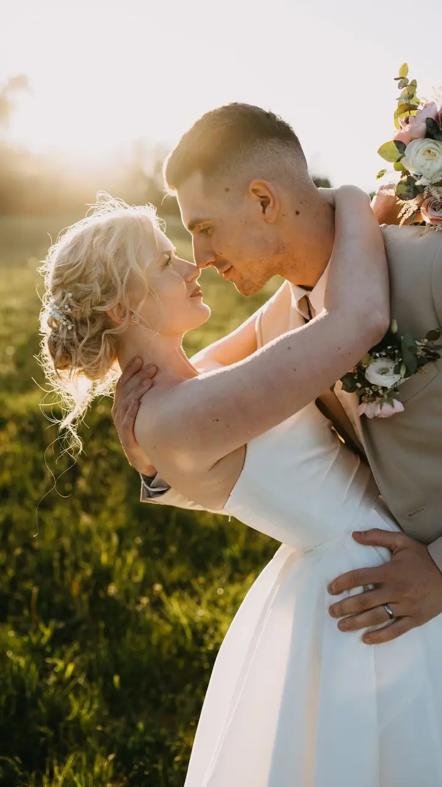
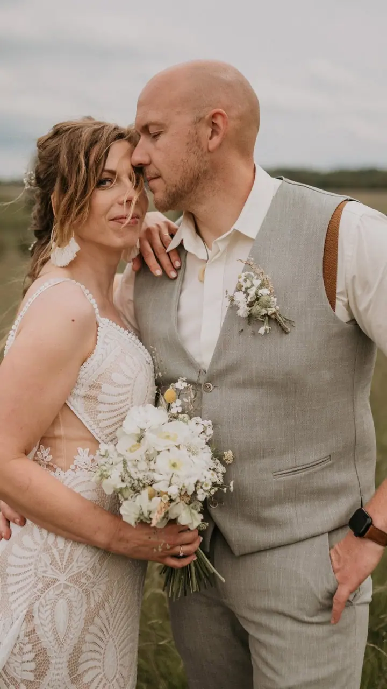
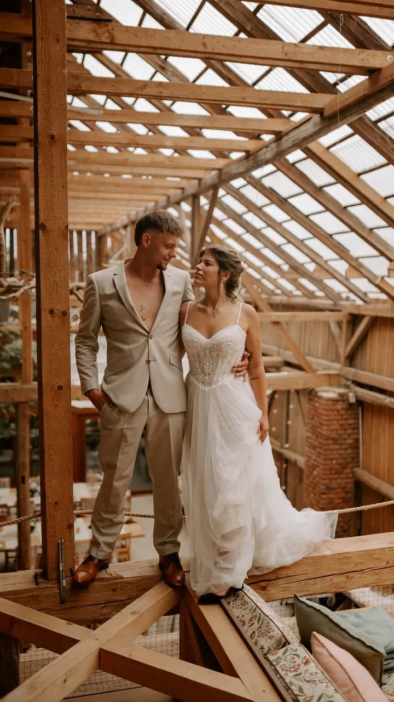

jedna
Svatby
Fotím celý váš svatební den, od příprav přes obřad až po večerní focení novomanželů. Jezdím po Plzeňském a Středočeském kraji, ale ráda dojedu i dál.

Svatební fotografka · Plzeňský kraj, Středočeský kraj, Praha

Jmenuji se Michaela Vavrová a jsem svatební fotografka z Plzeňského kraje. Fotím svatby a předsvatební focení po Plzeňském a Středočeském kraji, ale když mě potřebujete jinde, ráda dojedu i za vámi.
Více o mně
Co fotím
jedna
Fotím celý váš svatební den, od příprav přes obřad až po večerní focení novomanželů. Jezdím po Plzeňském a Středočeském kraji, ale ráda dojedu i dál.
dvě
Klidné focení ve dvou ještě před svatbou. Poznáme se, zvyknete si na foťák a ve velký den už budete před objektivem jako doma.
Nejhezčí chvíle často přijdou při západu slunce

Za objektivem
Jmenuji se Michaela a fotím svatby. Nejčastěji mě potkáte v Plzeňském a Středočeském kraji a v Praze, ale vzdálenost pro mě není překážka. Když si sedneme, dojedu i dál.
Na svatbách mě baví všechno, co se nedá naplánovat. Smích, který přijde ve chvíli, kdy ho nikdo nečeká, pejsek, který si odchod od obřadu užívá stejně jako vy, a večerní světlo, kvůli kterému se vyplatí na chvíli odběhnout od hostů.
Pokud se chcete před svatbou s foťákem trochu sžít, ráda vás nejdřív vezmu na předsvatební focení. Termíny svateb na rok 2027 už mám otevřené, tak mi klidně napište.
Michaela
Napište mi datum a místo vaší svatby. Ověřím, jestli mám termín volný, a pošlu vám všechny informace.
Probereme, jak si svůj den představujete, co je pro vás důležité a jak bude focení probíhat.
Kdo chce, může si focení vyzkoušet ještě před svatbou. Poznáme se a ve velký den už nebudete mít z foťáku trému.
Ve svatební den jsem s vámi a fotím, jak se věci opravdu dějí. Potom fotky pečlivě vyberu, upravím a předám vám je.
Portfolio
Otázky
Ano. Fotím hlavně v Plzeňském a Středočeském kraji a v Praze, ale ráda dojedu i jinam. Napište mi, kde se budete brát.
Ano, termíny svateb na rok 2027 jsou otevřené. Čím dřív se ozvete, tím větší je šance, že váš den bude volný.
Je to dobrý způsob, jak se poznat a zvyknout si na foťák. Ve svatební den pak budete mnohem uvolněnější.
Přesný termín předání vám řeknu předem, abyste věděli, kdy se můžete na fotky těšit.